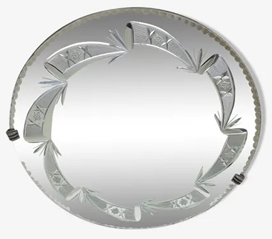

Couleur : argent
Forme : rond
Style : ce miroir rond date des années 1960. Il a pour matériaux le verre et le cristal.
Époque : vintage
Cadre : le cadre est gravé et biseauté.
Hauteur : 62 cm
Largeur : 62 cm
Date d’acquisition : 2017-12-15
Moyen d’acquisition : achat
Prix d’achat : 250 €
En mai 2020, le prix du miroir était de 250 €.
Ce miroir peut être fixé dans n’importe quelle pièce du logement, dans un vestibule, un couloir.